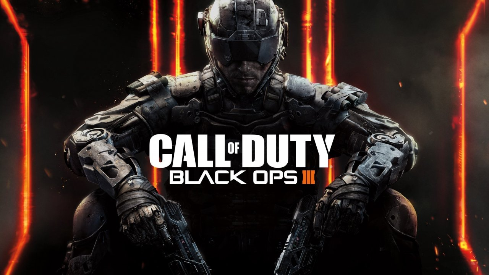
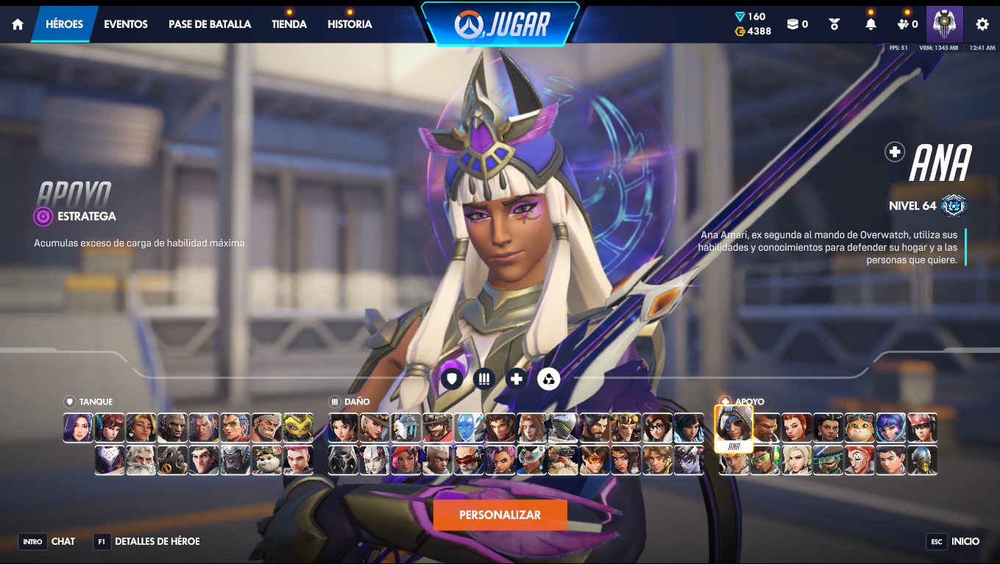

Los videojuegos han evolucionado en una amplia variedad de géneros, y entre ellos destaca el género de los shooters. Exploraremos en detalle la definición, las características clave y la popularidad de los videojuegos de tipo shooter, destacando cómo estos juegos ofrecen experiencias intensas y desafiantes para los jugadores.
SHOOTER EN PRIMERA PERSONA

Call of Duty Black Ops 3
Incluye campañas para un jugador, intensas partidas multijugador en línea, modos cooperativos contra Zombis y experiencias gratuitas de tipo battle royale como Warzone.
Primera persona (FPS) o tercera persona (TPS)
Se tendrá un enfoque en la acción armada y la eliminación de enemigos.
HERO SHOOTERS

OVERWATCH 2
Overwatch es un juego de acción en equipo gratuito ambientado en un futuro optimista en el que todas las partidas presentan una refriega definitiva 5c5.